Dynamika to dział fizyki, który zajmuje się badaniem ruchów ciał z uwzględnieniem ich przyczyn, czyli sił.
Dynamika to dział fizyki, który zajmuje się badaniem ruchów ciał z uwzględnieniem ich przyczyn, czyli sił.
Siłą nazywamy wielkość wektorową, będącą miarą mechanicznego oddziaływania na ciało badane ze strony innych ciał.
Jeżeli na ciało działa kilka sił i suma wszystkich wektorów równa jest 0 to mówimy, że siły te się równoważą (równanie 1), jeżeli zaś suma ta jest różna od zera to mówimy, że istnieje siła wypadkowa tych sił przyłożonych do tego ciała (równanie 2).
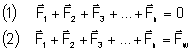
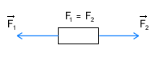
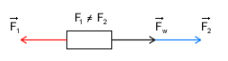
Arystoteles twierdził, że jeżeli ciało porusza się to musi na nie działać jakaś siła. Dopiero Galileusz sformułował prawo mówiące o tym, że punkt materialny trwa w stanie spoczynku lub prostoliniowego ruchu jednostajnego dopóty, dopóki działanie ze strony innych ciał nie wyprowadzi go z tego stanu. W XVII w. Isaac Newton, wykorzystując prace Galileusza, sformułował zasadę w której podważa koncepcje Arystotelesa. Zasada ta zwana jest "I zasadą dynamiki", lub "zasadą bezwładności":
|
Okazuje się jednak, że ta zasada nie zawsze jest słuszna. Ma to związek z układem odniesienia. W kinematyce nie miało znaczenia jaki układ odniesienia wybierzemy do obserwacji. W dynamice już takiej swobody nie mamy.
Przeprowadźmy doświadczenie myślowe. Niech obserwator A stoi obok drogi (zwiążmy z nim jeden układ odniesienia), a obserwator B niech jedzie po tej drodze autobusem. Załóżmy, że w autobusie tym na podłodze znajduje się kula (tarcie między kulą a podłogą autobusu pomijamy). Jeżeli autobus porusza się ruchem jednostajnym prostoliniowym, to obaj obserwatorzy (ten na zewnątrz i ten w autobusie) powiedzą, że na kulę nie działa żadna niezrównoważona siła. Obserwator A powie, że kula ta porusza się ruchem jednostajnym prostoliniowym, natomiast obserwator B powie, że kula pozostaje w spoczynku. Do tego momentu zasada dynamiki jest spełniona. Ale co się stanie jeżeli autobus zacznie hamować? Obserwator A powie, że mimo iż autobus hamuje kula nadal porusza się ruchem jednostajnym prostoliniowym (pamiętajmy, że pomijamy opory ruchu kuli). Natomiast obserwator B zauważy, że mimo iż na kulę nie działa żadna niezrównoważona siła, zaczęła się ona poruszać ruchem jednostajnie przyśpieszonym (autobus nadal zwalnia), dopiero gdy autobus się zatrzyma kula poruszać się będzie ruchem jednostajnym prostoliniowym. Dla obserwatora A zasady dynamiki wydają się wciąż prawidłowe. Ale według obserwatora B to już nie jest takie oczywiste, bo przecież nie było niezrównoważonej siły, a mimo to kula doznała przyśpieszenia. Zastanówmy się czym różnił się układ odniesienia obserwatora A i obserwatora B. Otóż ten pierwszy, poza autobusem, pozostawał cały czas w spoczynku, natomiast, układ odniesienia obserwatora B znajdował się w autobusie i dopóki poruszał się ruchem jednostajnym prostoliniowym (pierwsza część doświadczenia) dopóty zasada "I zasada dynamiki" była zachowana. Ale kiedy obserwator B zaczął hamować razem z autobusem, czyli zaczął poruszać się ruchem jednostajnie zmiennym kula zaczęła się poruszać mimo iż nie działała na nią żadna siła.
Układ jaki występuje w przypadku obserwatora A (a także w pierwszej części doświadczenia układ związany z obserwatorem B) nazywa się inercjalnym układem odniesienia.
|
Układ jaki występuje w drugiej części doświadczenia związany z obserwatorem B nazywamy nieinercjalnym układem odniesienia.
|
Obserwator B mówił, że chociaż nie działa żadna niezrównoważona siła na kulę to zaczęła się ona poruszać. Ale wiadomo, że bez działania siły ciało nie może zacząć się poruszać. Dlatego wprowadzono pojęcie siły bezwładności o której możemy mówić jedynie w nieinercjalnych układach odniesienia. Siła bezwładności nie ma przyczyny (bo przyczyna ruchu kuli pochodzi z zewnątrz - z poza nieinercjalnego układu obserwatora B).
Teraz możemy uogólnić naszą "I zasadę dynamiki":
|
Pierwsza zasada określa dynamiczne równanie ruchu jednostajnego prostoliniowego:
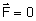
II zasada dynamiki
Druga zasada dynamiki sformułowana przez Newtona stała się podstawowym prawem dynamiki punktu materialnego. Mówi ona o tym jak zmienia się ruch punktu materialnego pod wpływem przyłożonych do niego sił:
|
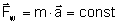 - dynamiczne równanie ruchu jednostajnie zmiennego
Każde ciało posiada określoną bezwładność tzn. taką cechę która informuje nas o tym czy jest go trudno, czy łatwo wyprowadzić ze stanu spoczynku, lub zmienić jego prędkość. Miarą bezwładności jest masa bezwładna ciała. Masa jest wartością skalarną czyli jest niejako stałą która charakteryzuje bezwładność ciała. Można przyjąć, że masa ma wartość stałą, bo tylko przy prędkościach bliskich prędkości światła ta wartość się zwiększa.
Dzięki istnieniu bezwładności ciało nie przyśpiesza w sposób natychmiastowy, lecz stopniowo. Im masa jest większa tym to przyśpieszenie jest wolniejsze. Np. działając jednakową siła na piłeczkę pingpongową i na kulę do kręgli piłeczka pingpongowa uzyska większe przyśpieszenie bo jej bezwładność (masa) jest mniejsza.
Z powyższego wzoru można wyprowadzić jednostkę siły, czyli niuton:
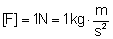
Pęd i popęd
Iloczyn masy bezwładnej ciała i prędkości tego ciała nazwano pędem masy bezwładnej ciała. Pęd jest wielkością wektorową, a jego kierunek i zwrot jest zgodny z kierunkiem i zwrotem wektora prędkości:
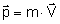
Jednostką pędu jest:
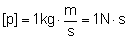
Dynamiczne równanie ruchu jednostajnie zmiennego możemy więc przekształcić następująco:
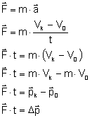
Ten ostatni wzór nazywany jest uogólnioną postacią II zasady dynamiki.
Iloczyn wektora siły i czasu także ma swoją nazwę. Jest to tzw. popęd działającej siły i oznaczany jest symbolem 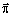 . Jak widać jest to wartość wektorowa o kierunku i zwrocie zgodnym z kierunkiem i zwrotem działającej siły.
Tak więc:
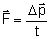 takie równanie nazywamy dynamiczną postacią siły.
Zasada zachowania pędu
Doświadczenie uczy nas, że jeżeli mamy dwie identyczne kule i jedna z nich jest w spoczynku a druga porusza się z prędkością V, to po zderzeniu kula która znajdowała się w spoczynku zacznie poruszać się z prędkością V natomiast kula która poruszała się przed zderzeniem zatrzyma się. Jeżeli natomiast obie kule poruszają się z prędkością V i nastąpi czołowe zderzenie tych kul to obie kule odbiją się i będą podążały "z powrotem".
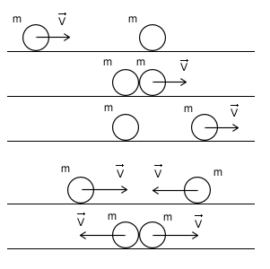
Mamy tu do czynienia z zasadą zachowania pędu. Zasada ta jest spełniona jeżeli bierzemy pod uwagę układ odosobniony, tzn. taki w którym nie działają żadne niezrównoważone siły zewnętrzne. Zasada zachowania pędu jest istotna także ze względu na to, że (przeciwnie do zasad dynamiki Newtona) jest prawidłowa także w mechanice relatywistycznej, czyli dla ciał poruszających się z prędkością porównywalną z prędkością światła.
Zasada zachowania pędu mówi nam:
|
W naszych przykładach układem ciał były dwie kule. Całkowity pędu układu pozostaje bez zmian. Pęd układu to iloczyn prędkości i środka masy układu. Można także wyliczyć pęd układu sumując pędy wszystkich ciał w tym układzie:
III zasada dynamiki
Trzecia zasada dynamiki Newtona mówi o wzajemnym oddziaływaniu ciał. Prostym doświadczeniem możemy udowodnić poprawność tej zasady. Niech dwie osoby będą na wrotkach (ewentualnie rolkach, łyżwach itp.). Niech jedna z nich stoi nieruchomo, a druga ją odepchnie od siebie. Mimo iż tylko jedna osoba odpychała drugą, to obie zaczynają się poruszać. Zjawisko to wyjaśnia "III zasada dynamiki":
|
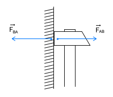
Może znacie taką formę: "Każdej akcji towarzyszy reakcja". Otóż wzięła się ona właśnie z trzeciej zasady dynamiki. Bowiem siły FBA i FAB nazywamy odpowiednio akcją i reakcją.
Dynamika ruchu "jednostajnego" po okręgu
Kiedy mówiliśmy o ruchu "jednostajnym" po okręgu poruszyliśmy problem przyśpieszenia dośrodkowego. Jak wiemy jeżeli istnieje przyśpieszenie to musi i istnieć siła. Ale w zależności od wyboru układu odniesienia są to inne siły.
W układzie inercjalnym (związanym np. ze środkiem okręgu po którym porusza się punkt materialny) istnieją siły: dośrodkowa (akcji) oraz odśrodkowa (reakcji).
Siła dośrodkowa jest przyczyną powstania przyśpieszenia dośrodkowego i wyraża się kilkoma równoważnymi wzorami:
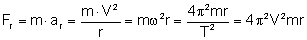
Siła ta utrzymuje ciało w ruchu po okręgu. Np. jeżeli mamy zawieszony kamyk na lince i zaczniemy nim kręcić tak by poruszał się po okręgu to siłą dośrodkową będzie siła napięcia linki. Siła dośrodkowa jest zawsze skierowana zgodnie z promieniem okręgu, czyli z wektorem prędkości liniowej tworzy kąt prosty (wektor prędkości jest styczny do toru ruchu, czyli w tym przypadku styczny do okręgu, wiemy też że jeżeli wektor jest styczny do okręgu to jest prostopadły do promienia tego okręgu).
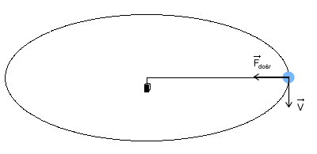
Siła odśrodkowa
Jeżeli istnieje siła dośrodkowa to zgodnie z "III zasadą dynamiki" musi istnieć jakaś reakcja, czyli w tym przypadku jest to siła odśrodkowa. W naszym przykładzie będzie to siła która działa na rękę osoby trzymającej linkę. Wektor tej siły także jest skierowany w kierunku promienia, a jego zwrot jest przeciwny do zwrotu siły dośrodkowej. Siły te jak wynika z "III z.d." nie równoważą się bo są zaczepione do innych ciał.
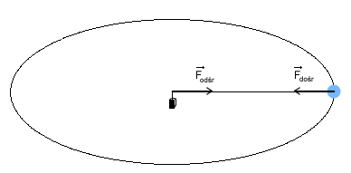
W nieinercjalnym układzie odniesienia istnieją inne siły: siła odśrodkowa bezwładności, oraz siła utrzymująca ciało w spoczynku.
Siła odśrodkowa bezwładności
Chyba każdemu zdarzyła się sytuacja podczas jazdy autobusem, że autobus nagle skręcił, a my żeby nie przewrócić się musieliśmy się mocno czegoś trzymać. Taka sytuacja jest dobrym przykładem działaniem siły odśrodkowej bezwładności (poruszamy się wraz z autobusem, więc układ względem którego opisujemy ruch jest nieinercjalny). Jeżeli autobus zakręca (lub porusza się po okręgu), na pasażerów działa siła odśrodkowa bezwładności, skierowana zgodnie z kierunkiem promienia, ale ma zwrot zwrócony na zewnątrz okręgu. Większość pasażerów w takim przypadku trzyma się mocno jakiegoś uchwytu dzięki czemu może pozostać w spoczynku względem autobusu, czyli mówiąc inaczej nie przewrócić się. Dzięki temu, że trzymamy się stałego uchwytu, na naszą rękę, a w konsekwencji na nas, działa siła utrzymująca nas w spoczynku. Siła utrzymująca nas w spoczynku w nieinercjalnym układzie odniesienia jest identyczna z siłą dośrodkową w inercjalnym układzie odniesienia.
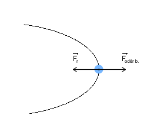
Siła odśrodkowa bezwładności jest siłą pozorną, dlatego mówimy o niej tylko w przypadku nieinercjalnego układu odniesienia.
Tarcie
Archimedes twierdził, że ruch nie może istnieć bez działającej siły. Dzisiaj wiemy, że się mylił. Ale proste doświadczenia pozornie potwierdzają jego teorię. Każde ciało np. piłeczka wprawione w ruch po jakimś czasie zatrzymuje się. A jeżeli chcemy by ciało nie zatrzymywało się musimy działać na nie siłą cały czas. Jednakże w swoich rozważaniach Archimedes, a także inni uczeni do czasów Galileusza, popełniał ważny błąd. Otóż nie brał pod uwagę wszystkich działających sił na ciało. Dzisiaj wiemy, że jeżeli naszą piłeczkę wprawimy w ruch to nie możemy powiedzieć, że nie działają na nią żadne niezrównoważone siły, bo działa na nią siła tarcia, która jest przyczyną opóźnienia, a w konsekwencji zatrzymania się piłeczki. Dopiero gdy będziemy działać na piłeczkę stałą siłą równoważącą tarcie, na piłeczkę nie będą działać niezrównoważone siły i poruszać się będzie ruchem jednostajnym.
Tarcie jest jednym z rodzajów oporów ruchu. Tutaj zajmiemy się tylko tarciem statycznym i kinetycznym. Przyczyną tarcia są najczęściej nierówności powierzchni trących. Nawet bardzo gładka powierzchnia posiada jakieś nierówności.
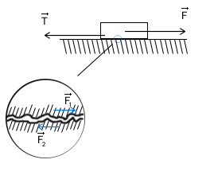
Z doświadczeń wynika, że tarcie (T) jest wprost proporcjonalne do nacisku ciała na podłoże. By wprowadzić znak równości między tarciem a naciskiem w równaniu wprowadza się tzw. współczynnik tarcia (f):
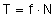
W przypadku gdy ciało porusza się po poziomym torze nacisk jest siłą równą: 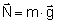 . Współczynnik tarcia jest wielkością zależną od materiałów z których zbudowane są powierzchnie trące. Inne bowiem jest tarcie jeżeli przesuwamy drewnianą skrzynię na asfalcie, a inny gdy tę skrzynie przesuwamy po lodzie.
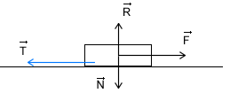
Dla każdych powierzchni istnieją dwa współczynniki tarcia. Jedno zwane kinetycznym, a drugie statycznym. Współczynnika kinetycznego używamy do obliczenia wartości siły tarcia, która oddziaływuje na poruszający się obiekt. Tarcie jest siłą, więc jest to wektor skierowany równolegle do wektora prędkości i zwrócony przeciwnie do niego.
Drugim rodzajem tarcia jest tarcie statyczne. Współczynnik tarcia statycznego służy nam do obliczenia maksymalnej wartości tarcia statycznego. Nazwijmy to tarcie Ts-max. Jeżeli na ciało, które znajduje się w spoczynku zadziałamy siłą F1 taką, że: 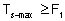 to ciało pozostanie w spoczynku, a realne tarcie będzie równe F1. Natomiast jeżeli na ciało zadziałamy siłą F2 taką, że 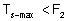 to ciało zostanie wytrącone ze stanu spoczynku, czyli zacznie się poruszać.
Zawsze współczynnik tarcia statycznego jest większy od współczynnika tarcia kinetycznego. Oznacza to, że trudniej jest wprawić ciało w ruch, niż utrzymać je w ruchu jednostajnym prostoliniowym.